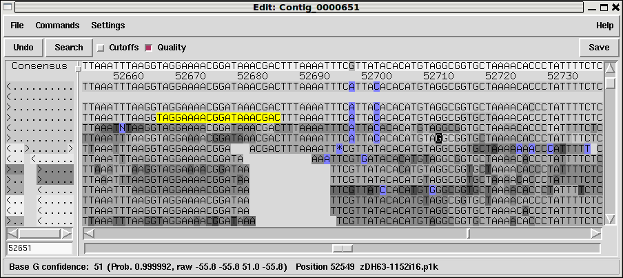
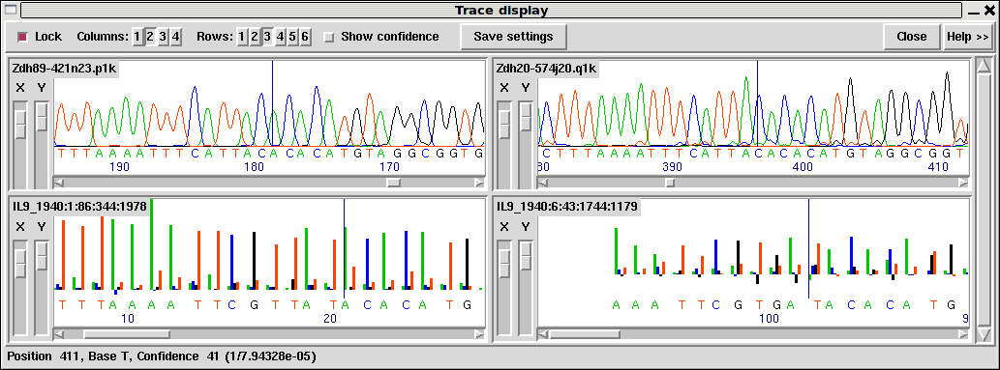

The Gap5 Contig Editor is designed to allow rapid checking and editing of characters in assembled readings. Very large savings in time can be achieved by its sophisticated problem finding procedures which automatically direct the user only to the bases that require attention. The following is a selection of screenshots to give an overview of its use.

The figure above shows a screendump from the Contig Editor showing the consensus for a small region of a contig and the aligned reads. The main components are, top-most menu bar; common buttons and controls beneath this; the main name and sequence panels to the left and right; scrollbars and jog-control; a status text line at the bottom.
The names panel on the left can show either reading names or a small ASCII diagram representing their position, orientation and mapping quality as a grey-scale. The sequences to the right in the screenshot has base quality shown in grey (dark being poor, light being good) with disagreements to the consensus at the top shown in blue. The consensus line also shows base qualities. You may notice we have a mixture of long and short sequences, with the longer ones being at the top. This screenshot is from a mixed assembly of Illumina short-read data and ABI Sanger-method capillary sequences.
One base is drawn in inverse video (a "G"). This is the current location of the editing cursor. We can move this we arrow keys or clicking with the left mouse button. It behaves much like the editing cursor in a word processor and need not be visible in the portion of the contig we are viewing.
Also visible is a set of bases coloured yellow. These are an OLIGO annotation. Gap5 supports a wide variety of annotation types (often also referred to as "tags"). These are covered later in more detail.

This figure is an example of the Trace Display showing three capillary traces and an Illumina trace from readings in the previous Contig Editor screendumps. Note that this demonstrates the possibility of showing the raw trace data for new short-read sequencing technologies, but typically this is not available due to the high storage size.